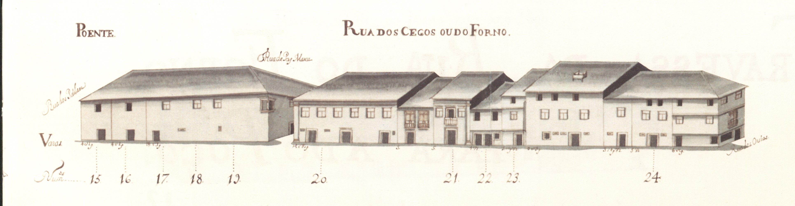

Pequena rua, hoje parcialmente desaparecida, que, segundo o Mappa, ligava as traseiras da igreja do Colégio da Companhia de Jesus às da Sé.
Era conhecida por esta designação já na Idade Média, devido ao Forno da Infanta que se localizava na casa do prazo n.º 12.
Estranhamente esta artéria não figura no Tombo do Cabido (ca. de 1369-1380).
É esta uma rua da periferia da Sé, bastante secundária, simples elo de ligação entre ruas. Os seus edifícios, têm 2 e 3 pisos, com poucas varandas e raras gelosias. De notar uma casa grande na esquina da rua de S. João; outra, duplamente sobradada na junção com a rua das Oucias; e a janela de canto, de cariz renascentista, do prédio grande, do gaveto feito com a rua Pay Manta.
Das 13 casas do lado Nascente e 11 do lado Poente, são prazos do Cabido 11 e 8 respectivamente.
Hoje muito poucas casas se conservam no lado Este desta rua. O lado Oeste está totalmente alterado.
A parte Sul da rua, isto é, a que vai além da rua de Pay Manta, foi fechada ao público, por deliberação camarária de 20-06-1896.
Actual rua do Forno.

Rua dos Cegos ou do Forno - vista nascente.
Rua dos Cegos ou do Forno - vista poente.
Número: 1
Enfiteuta: N/A
Foro: N/A
Corresponde ao n.º 11 da Rua de S. João, para onde tem a frontaria e serventia principais e ao n.º 3 e 4 da Rua das Oussias.
Número: 2
Enfiteuta: Francisco Pereira Marinho
Foro: 280 reis e 1 galinha
O enfiteuta é filho de Alexandre Pereira Marinho, sendo o emprazamento feito no ano de 1724. A casa foi construída em 1535, em pertenças da casa n.º 9, da Rua de S. João.
Número: 3
Enfiteuta: João Pereira do Lago
Foro: 470 reis e 2 galinhas
Foi construída em pertenças do n.º 9, da rua de S. João.
Número: 4 e 23
Enfiteuta: Francisco Correia, carpinteiro
Foro: 520 reis e 2 galinhas
A casa n.º 4 confronta, do sul, com casa foreira à Capela de Nossa Senhora da Glória.
Número: 5
Enfiteuta: Rev. João de Sousa Lima, Mestre Escola
Foro: 320 reis e 2 galinhas
Confronta, do norte, com casa foreira à Capela de Nossa Senhora da Glória e, do sul, com casa foreira à Igreja de S. Pedro d'Este.
Número: 6
Enfiteuta: Dr. José Peixoto
Foro: 400 reis e 2 capões
Confronta, do norte, com casa foreira à Igreja de S. Pedro d'Este.
Número: 7
Enfiteuta: Francisco da Costa de Mesquita, cidadão de Braga
Foro: 120 reis e 2 galinhas
Foi construída em 1554,em pretenças do n.º 8.
Número: 8 e 9
Enfiteuta: Lie. João Carvalho Ferreira
Foro: 630 reis e 4 galinhas
A casa n.º 9 confronta, do sul, com a travessa que vai para a Rua de S. João e, foi unida ao n.º 8, no ano de 1674. O prazo é constituído, ainda, pelo n.º 9 da travessa da Rua de S. João para a do Forno.
Número: 10 e 11
Enfiteuta: N/A
Foro: N/A
Corresponde ao n.º 7 da travessa que vai para a Rua de S. João, para onde tem a frontaria e serventia principais. No ano de 1596, o n.º 11 foi unido ao n.º 10, constituindo um só prazo.
Número: 12
Enfiteuta: Carlos Magalhães de Azevedo, Cónego
Foro: 290 reis e 2 galinhas
Pertence ao n.º 5 da travessa da Rua de S. João para a do Forno. A denominação de «Forno do Infante» advém-lhe de ter sido construída no local onde, antes de 1481, funcionou o antigo forno.
Número: 13
Enfiteuta: Padre Luís da Cunha, Congregado
Foro: 60 reis e 1 galinha
Número: 14
Enfiteuta: N/A
Foro: N/A
Não aparece desenhada no mapa, por ter sido demolida e incorporada no Colégio de S. Paulo da Companhia de Jesus. Inicialmente foi foreira à obra da Sé. Depois de 1568, foi trocada por outra casa do referido Colégio.
Número: 15, 17, 18 e 19
Enfiteuta: N/A
Foro: N/A
Correspondem ao n.º 1 da travessa que vai da Rua do Forno para a do Poço, para onde têm a frontaria e serventia principais. No prazo da casa n.º 19 foi incorporado o n.º 15, em 1673, e os n.º 17 e 18, em 1561.
Número: 16
Enfiteuta: N/A
Foro: 54 reis (de censo)
A casa é foreira ao chantrado. O censo é pago pelo Dr. Francisco Gomes do Couto.
Número: 20
Enfiteuta: António Barreto de Meneses
Foro: 240 reis e 2 galinhas
O enfiteuta sucedeu a Constantino Barreto de Meneses e ao Rev. Abade Jerónimo de Araújo. O n.º 20 situa-se na esquina que dá para a travessa que vai para a Rua do Poço e confronta, do sul, com a dita travessa e, do norte, com casa de vínculo. O n.º 21 confronta, do Sul, com a referida casa de vínculo. O n.º 10 da travessa da rua do Forno para a do Poço faz parte do n.º 20.
Número: 21
Enfiteuta: António Barreto de Meneses
Foro: 500 reis e 2 capões
O enfiteuta sucedeu a Constantino Barreto de Meneses e ao Rev. Abade Jerónimo de Araújo. O n.º 20 situa-se na esquina que dá para a travessa que vai para a Rua do Poço e confronta, do sul, com a dita travessa e, do norte, com casa de vínculo. O n.º 21 confronta, do Sul, com a referida casa de vínculo. O n.º 10 da travessa da rua do Forno para a do Poço faz parte do n.º 20.
Número: 22
Enfiteuta: Manuel Ribeiro Pereira
Foro: 200 reis e 3 galinhas
Número: 23
Enfiteuta: N/A
Foro: N/A
Pertence ao n.º 4
Número: 24
Enfiteuta: Teresa da Silveira, viúva de Sebastião do Couto
Foro: 300 reis e 2 galinhas
O emprazamento foi feito em 1710.